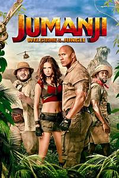

Jumanji-Vár a dzsungel

A Jumanji – Vár a dzsungel (eredeti cím: Jumanji: Welcome to the Jungle) 2017-ben bemutatott amerikai kalandfilm, melyet Jake Kasdan rendezett. A producere Ted Field, a forgatókönyvírója Scott Rosenberg, a zeneszerzője James Newton Howard. A főbb szerepekben Dwayne Johnson, Kevin Hart, Jack Black és Karen Gillan látható.
A film forgatása 2016 szeptemberében kezdődött – Honolulu, Hawaiiban. A régi szereplőgárdából egy színész sem tért vissza, de Van Pelt, a fejvadász megjelenik, szerepét Jonathan Hyde-tól Bobby Cannavale amerikai színész vette át. A mozifilm a Matt Tolmach Productions gyártásában készült s a Columbia Pictures forgalmazásában jelent meg. Az Amerikai Egyesült Államokban 2017. december 20-án, Magyarországon december 21-én mutatták be a mozikban.